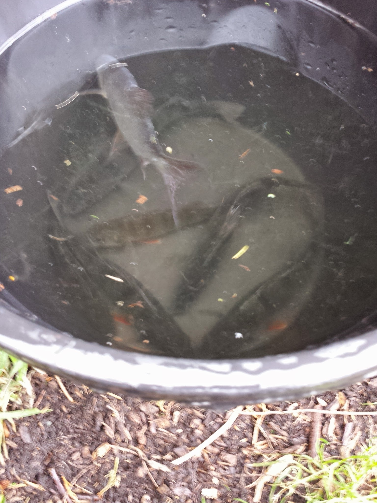

We then went to Denhall Fisheries in Burton, Neston one of my favourite old fisheries which has 3 lakes one for general match fishing a Carp pit and a Predator pit with Catfish and Pike and a cafe which is on a local cycling route coming from Wales.
Denhall Fisheries Link
The Woodlands Catfish and Pike Pit.
Here I am using my custom set up for Pike fishing with Deadbait using Fox Micron PSR Bite alarms.
Fox Micron PSR Bite Alarms
Deadbait Rigs Link
I used two different fishing set ups at this Pit one using Deadbait and one using a Float fishing set up using small fish Leon had caught in the pond next to the one we were fishing in.
Pike Float Rigs link
Leon fishing for Livebait in the Kingfisher Pit.
Leon returned with a nice bucket full of Livebait to be used for Floatfishing Livebait Rig.

A nice selection of Perch and Roach for Livebaiting.
I was using my own custom Deadbait Rig using Lamprey I got my personal best Pike at the time at 16lb.
You have to be careful handling Pike due to them being quite fragile but even experienced Pike fisherman come a cropper sometimes as I found out that day while returning her back into the water!
But I wasn't phased at all and if anything I was more interested in fishing for this species of fish.
I returned to Denhall fisheries a week later and using a simple Lamprey Deadbait Rig I caught My personal best Pike during a competition between me and a few friends weighing in at 18lb.

During the summer months I decided to have a go at fishing for Catfish there are two methods you can use one is Pellet fishing similiar to carp and another is Deadbaiting her is my Catfish Deadbait set up.
Catfishing Deadbait Link
Catfish Pellet Baits
I decided to use the last of my bait due to the Pike fishing going quiet and just leave it out overnight but I got no results.